Гештальт-психология изучает восприятие и мышление как целостные структуры, а обучение на её принципах помогает глубже понимать себя и других. Мы составили рейтинг лучших курсов, где инсайт-обучение сочетается с когнитивными, конструктивистскими и перцептивными методами. Эти программы открывают новые горизонты, применяя структурный и проблемно-ориентированный подход к развитию.
Содержание статьи
- 🏆 Гештальт-терапия – Московский институт психологии
- 🏆 Обучение гештальт-терапии – Онлайн Институт Smart
- 🏆 Курс профессиональной переподготовки в области гештальт-терапии – Talentsy
- 🏆 Гештальт-терапия в практике психолога – НАДПО
- Гештальт-терапевт + MBA – Московский Институт Профессионального Образования
- Гештальт-терапия – Московский институт технологий и управления
- Психокоррекционная работа с детскими травмами в гештальт-подходе – НИИДПО
- Гештальт-терапия в работе с детской психосоматикой – Институт прикладной психологии
- Гештальт-терапия онлайн. Базовый курс – Институт Психотерапии Онлайн
- Гештальт-терапия – Национальный университет современных технологий
- Психологическое консультирование по методу гештальт-терапии – Институт практической психологии и педагогики
- Гештальт-терапия – Международная Школа Профессий
- Гештальт-подход в психологическом консультировании – Среда Обучения и Московский институт психоанализа
- Гештальт-терапия в практике психолога – Национальный центральный институт развития дополнительного образования
- Обучение гештальт-терапии – Учебный центр «СЕНТИО»
- Гештальт-терапия – ArtForIntrovert
- Обучающий курс по гештальтпсихологии – Онлайн Академия
🏆 Гештальт-терапия – Московский институт психологии
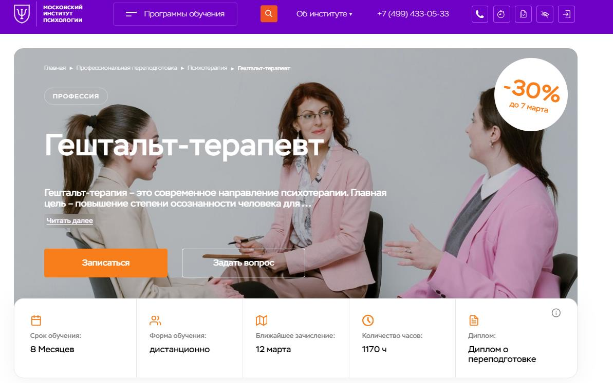⭐ Рейтинг: 5.0
- Сайт: mip.institute/professions/psihoterapiya/geshtalt-terapevt
- Полная стоимость: 181 000 рублей (со скидкой до 7 марта 126 484 рублей). Возможность вернуть 13% налогового вычета. Беспроцентная рассрочка на 12 месяцев.
- Рассрочка: 10 500 рублей в месяц на 12 месяцев.
- Длительность: 8 месяцев.
- Документ: Диплом о профессиональной переподготовке с международными приложениями.
- Трудоустройство: Членство в ОППЛ и доступ к профессиональному сообществу.
Особенности курса:
Данный курс предоставляет глубокое знание методов и техник гештальт-терапии, интегрирует гештальт-подход в практическую психотерапию. Программа включает лекционные вебинары и практические занятия, позволяя освоить профессию с нуля и получить квалификацию гештальт-терапевта, сохраняя гибкость обучения за счет дистанционного формата.
Преподаватели курса:
- Бербер Наталья Николаевна — кандидат психологических наук, сертифицированный НЛП-практик.
- Косина Алла Александровна — клинический психолог, опыт 17 лет.
- Егиазарова Мария Андреевна — бизнес-психолог, выпускница МГУ.
Кратко о программе курса:
- Изучение теоретической базы и основных принципов гештальт-терапии
- Практические занятия по гештальт-подходу
- Освоение групповой и семейной терапии
- Участие в супервизиях и интервизиях
Чему научитесь:
Вы научитесь применять гештальт-терапию для разрешения психологических проблем, развивая навыки активного слушания и эмпатии.
Преимущества и особенности:
- Гибкий дистанционный формат обучения
- Поддержка опытных преподавателей
- Членство в ОППЛ
- Практические занятия и работа с реальными кейсами
- Квалификация, признанная в России и за рубежом
Читайте отзывы учеников:
Студенты отмечают высокое качество обучения в Московском институте психологии, включая профессионализм преподавателей и удобство дистанционного формата. Они подчеркивают практическую направленность и ценность полученных знаний для карьеры.
🏆 Обучение гештальт-терапии – Онлайн Институт Smart
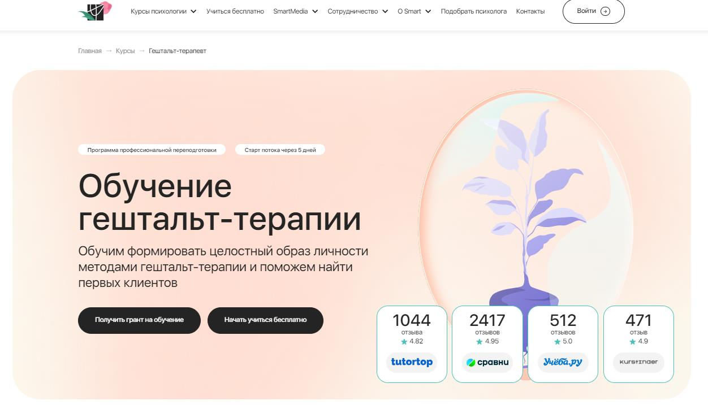⭐ Рейтинг: 5.0
- Сайт: smart-inc.ru/geshtalt-podkhod
- Полная стоимость: 274 900 рублей. Возможность вернуть 13 % налогового вычета. Предоставление гранта на обучение до 40 000 рублей.
- Рассрочка: от 9788 ₽/месяц на 24 месяца, первый платёж через 1 месяц.
- Длительность: 12 месяцев (1200 часов).
- Документ: Диплом о профессиональной переподготовке и диплом MBA.
- Трудоустройство: Центр карьеры помогает комфортно войти в профессию и наработать часы практики.
Особенности курса:
Курс предоставляет фундаментальные знания в гештальт-терапии и обширную практику через супервизии, семинары и реальные кейсы. Студенты учатся диагностировать кризисы и участвовать в терапевтическом процессе, получая диплом, соответствующий международным стандартам.
Преподаватели курса:
-
Мария Шульгина — магистр психологии, более 20 лет опыта.
-
Виктория Ашихмина — сертифицированный гештальт-терапевт, автор курса по травмам насилия.
-
Анна Лавровская — PCC коуч, опыт работы 20 лет.
-
Корина Дутка — магистр психологии, гештальт-терапевт с 2018 года.
-
Вероника Бильдюга — специалист в области сексуального и супружеского консультирования.
-
Юлия Дорошенко — гештальт-терапевт с 2011 года.
-
Милана Самарина — 5+ лет опыта работы психологом.
-
Зульфия Шайхутдинова — клинический психолог, арт-терапевт с опытом более 15 лет.
Кратко о программе курса:
- История развития гештальт-подхода.
- Теория поля и теория контакта в гештальт-терапии.
- Работа с метафорами и сновидениями.
- Тактики работы и кризисы в гештальт-подходе.
- Мини-группы для отработки практических навыков.
- Семинары и супервизии, практика в интервизионном чате.
Чему научитесь:
Освоите навыки гештальт-терапии, научитесь работать с кризисами и развивать самосознание клиентов.
Преимущества и особенности:
- Глубокое погружение в теоретическую и практическую часть курса.
- Поддержка менторов и кураторов на всех этапах обучения.
- Соответствие диплома международным и государственным стандартам.
- Доступ к интерактивной образовательной платформе 24/7.
- Участие в мини-группах с опытными психологами для обмена опытом и навыками.
- Курс ориентирован на практическое применение полученных знаний.
- Возможность получения членства в ОППЛ после завершения курса.
- Бонусы и акции от команды Smart.
Читайте отзывы учеников:
Студенты отмечают высокий уровень преподавания, обширную практическую часть и доступ к актуальным образовательным материалам.
🏆 Курс профессиональной переподготовки в области гештальт-терапии - Talentsy

⭐ Рейтинг: 5.0
- Сайт: talentsy.ru/geshtalt-terapiya
- Полная стоимость: От 12 292 рублей в месяц. Возможность вернуть 13% налогового вычета.
- Рассрочка: 0% на 24 месяца, первый платёж через 2 месяца.
- Длительность: 18 месяцев.
- Документ: Российский и международный дипломы о профессиональной переподготовке.
- Трудоустройство: Поддержка в организации частной практики, доступ к профессиональному сообществу.
Особенности курса:
Курс предлагает глубокое погружение в принципы гештальт-терапии и методы их практического применения. Участники получат возможность учиться у опытных практиков, докторов и кандидатов наук, в мини-группах с личным наставником, обеспечивающим сопровождение и поддержку. Дистанционный формат позволяет обучаться в удобное время, а насыщенная программа нацелена на получение востребованных навыков и устойчивые изменения.
Преподаватели курса:
- Елена Новоселова - психолог с более чем 30 годами опыта.
- Ольга Виндекер - кандидат наук, доцент, автор учебных пособий.
- Алексей Двойнин - кандидат наук, доцент в области общей психологии.
- Инна Васильева - доктор наук, профессор психологии интуиции.
- Ксения Кунникова - кандидат наук, нейропсихолог.
Кратко о программе курса:
- Базовые основы психологического консультирования
- Психология личности и основы психодиагностики
- Особенности консультирования клиентов разного возраста
- Гештальт-подход в практике
- Продвижение услуг психолога
Чему научитесь:
Обучение позволит вам освоить гештальт-методы, научиться выявлять и прорабатывать неосознанные чувства клиентов, а также продвигать свои услуги как психолога.
Преимущества и особенности:
- Комплексная программа с практическим акцентом
- Обучение у практикующих специалистов
- Доступ к профессиональному сообществу и современным исследованиям
- Удобный дистанционный формат обучения
- Международная аккредитация и дипломы
Читайте отзывы учеников:
Студенты Talentsy отмечают высокое качество обучения и профессионализм преподавателей, которые делают сложные темы понятными и доступными. Также упоминается удобный формат видеоуроков и хорошая поддержка на всех этапах обучения.
🏆 Гештальт-терапия в практике психолога» – НАДПО
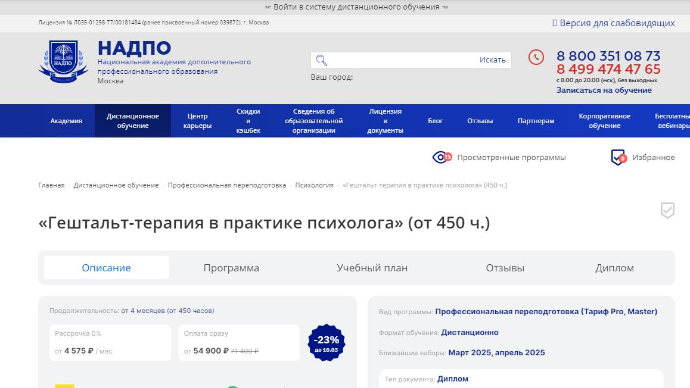⭐ Рейтинг: 4.9
- Сайт: nadpo.ru/do/geshtalt-terapiya-v-praktike-psikhologa/
- Полная стоимость: 54 900 рублей (скидка 23% от первоначальной цены 71 400 рублей). Возможность вернуть 13% налогового вычета.
- Рассрочка: 0% на 12 месяцев, от 4 575 рублей в месяц без первого взноса.
- Длительность: от 4 месяцев (от 450 часов).
- Документ: Диплом о профессиональной переподготовке с государственной лицензией.
- Трудоустройство: Поддержка в построении карьеры и развитии частной практики.
Особенности курса:
Данный курс предлагает глубокое погружение в гештальт-терапию, сочетая теоретические знания с практическими навыками. Обучение проходит в дистанционном формате, что позволяет совмещать учебу с работой. Студенты получают доступ к онлайн-консультациям с преподавателями, воркшопам и аудиолекциям. По окончании курса выдается диплом о профессиональной переподготовке, соответствующий государственным требованиям.
Преподаватели курса:
-
Елена Вячеславовна Дарменко — стаж научной и практической работы с 2002 года.
-
Галина Борисовна Нарожная — стаж научной и практической работы с 2011 года.
-
Виталия Игоревна Плавинская — стаж научной и практической работы с 2016 года.
-
Елена Алексеевна Прохорова — стаж научной и практической работы с 2018 года.
-
Инна Ивановна Заляцкая — стаж научной и практической работы с 2012 года.
-
Ирина Владимировна Мамаева — стаж научной и практической работы с 2013 года.
-
Людмила Сергеевна Стороженко — стаж научной и практической работы с 2002 года.
-
Мария Романовна Салихова — стаж научной и практической работы с 2007 года.
-
Виктория Олеговна Драчкова — стаж научной и практической работы с 2012 года.
-
Неля Ришатовна Чернышова — стаж научной и практической работы с 2017 года.
Кратко о программе курса:
- Общая психология.
- Психология личности.
- Основы психологического консультирования.
- Психодиагностика.
- Основы психотерапии.
- Истоки и основы гештальт-терапии.
- Теория self.
- Процесс гештальт-терапии.
- Терапевтические отношения в гештальте.
- Групповая гештальт-терапия.
- Работа со сновидениями в гештальте.
- Основы семейной гештальт-терапии.
- Гештальт-терапия с детьми.
Чему научитесь:
Вы освоите методы гештальт-терапии, научитесь проводить индивидуальные и групповые сессии, работать с кризисными состояниями и посттравматическими стрессовыми расстройствами.
Преимущества и особенности:
- Дистанционный формат обучения, позволяющий учиться из любой точки мира.
- Поддержка преподавателей и кураторов на всех этапах обучения.
- Практические онлайн-занятия, воркшопы и супервизии.
- Бессрочный доступ к учебным материалам и библиотеке вебинаров.
- Возможность совмещения обучения с работой благодаря гибкому графику.
- Диплом о профессиональной переподготовке, действующий на всей территории РФ.
- Возможность участия в книжном и киноклубах для расширения кругозора.
- Кэшбек-программа для экономии на обучении.
Читайте отзывы учеников:
Студенты отмечают высокое качество преподавания, практическую направленность курса и удобство дистанционного формата. Многие подчеркивают профессионализм преподавателей и возможность применять полученные знания на практике. Например, на сайте GdeKurs один из учеников пишет: «Хочу выразить свою благодарность и восторг от курса «Практические основы гештальт-терапии» в НАДПО. Этот курс не только предоставил мне ценные знания о гештальт-терапии, но и открыл новые горизонты в моей работе психологом.»
«Гештальт-терапевт + MBA» – Московский Институт Профессионального Образования
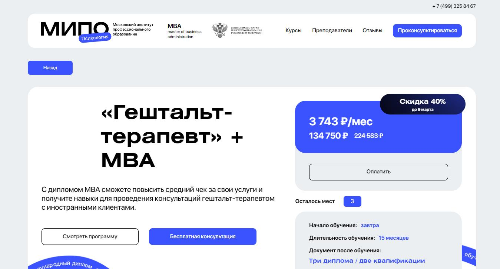⭐ Рейтинг: 4.9
- Сайт: mipoin.ru/gestalt_therapist_mba
- Полная стоимость: 224 583 рублей (со скидкой 40% – 134 750 рублей). Возможность оформить налоговый вычет.
- Рассрочка: 3 743 руб./мес. на 36 месяцев.
- Длительность: 15 месяцев.
- Документ: Три диплома о профессиональной переподготовке.
- Трудоустройство: Поддержка в построении карьеры, навыки ведения бизнеса и международное приложение к диплому.
Особенности курса:
Обучение дает уникальную возможность освоить гештальт-подход и дополнительно получить квалификацию MBA в бизнес-психологии. Студенты изучают техники работы с клиентами, методы диагностики, семейную терапию и бизнес-консультирование. Курс проходит в дистанционном формате с доступом к лекциям, вебинарам и практическим заданиям.
Преподаватели курса:
-
Дубровская Анастасия — профессиональный психолог, гештальт-терапевт.
-
Шушкина Людмила — семейный психолог, автор книг по популярной психологии.
-
Череменская Мария — специалист по гештальт-терапии и групповой психологии.
-
Латынцева Ольга — ведущая тренингов, семейный психолог, эксперт на телевидении.
Кратко о программе курса:
- Общая и возрастная психология.
- Социальная и педагогическая психология.
- Гештальт-терапия: теория, диагностика, сопротивление.
- Работа со сновидениями, группами и семьями.
- Бизнес-консультирование, коучинг, психология управления.
Чему научитесь:
Вы освоите методы гештальт-терапии, научитесь проводить семейные и групповые консультации, работать с клиентами по методам коучинга и бизнес-психологии.
Преимущества и особенности:
- Два направления подготовки: гештальт-терапия и бизнес-психология.
- Три диплома, включая международное приложение.
- Гибкий график обучения с доступом к лекциям 24/7.
- Возможность совмещения обучения с работой.
- Регулярные вебинары с практикующими психологами.
- Поддержка в карьерном развитии и ведении частной практики.
- Дополнительный курс по продвижению услуг в подарок.
Читайте отзывы учеников:
Студенты отмечают высокое качество преподавания, актуальные материалы и удобный формат дистанционного обучения. В отзывах часто упоминают, что курс помог освоить новые навыки, повысить квалификацию и успешно начать частную практику. Многие довольны возможностью получения сразу трех дипломов и дополнительного курса по продвижению.
Гештальт-терапия – Московский институт технологий и управления
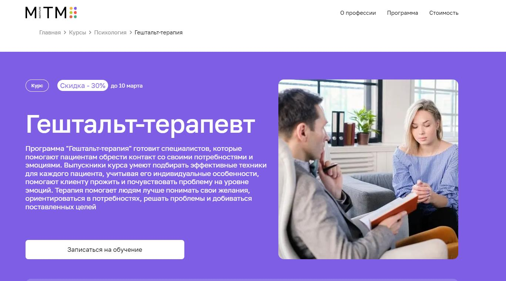
⭐ Рейтинг: 4.8
- Сайт: mitm.institute/geshtalt-terapiya--kurs
- Полная стоимость: 13 090 ₽/мес. (со скидкой 30% до 10 марта — 9 170 ₽/мес.). Возможность получить налоговый вычет 13%.
- Рассрочка: Беспроцентная рассрочка на 12 месяцев.
- Длительность: 1 год.
- Документ: Диплом о профессиональной переподготовке государственного образца.
- Трудоустройство: Поддержка в трудоустройстве и развитии профессиональной карьеры.
Особенности курса:
Программа включает в себя обучение дистанционно с удобным графиком, что позволяет совмещать учёбу с работой. Образовательная программа регулярно обновляется в соответствии с современными требованиями рынка труда. Участникам доступны поддержка кураторов 24/7 и участие в комьюнити с возможностью обсуждения методик и кейсов.
Преподаватели курса:
-
Ирина Валерьевна Лагунова — преподает уже 15 лет, практический опыт более 5 лет, член Ассоциации КПТ.
-
Анна Владимировна Цяпало — сексотерапевт, ассоциированный член Московской Психоаналитической Ассоциации.
-
Юлия Михайловна Юферова — практикующий психотерапевт, автор терапевтических программ.
Кратко о программе курса:
- Биография Фрица Перлза и основные теоретические принципы.
- Механизмы гештальт-терапии и групповой работы.
- Построение терапевтических отношений.
- Групповая и индивидуальная практика.
Чему научитесь:
Вы научитесь подбирать техники гештальт-терапии, помогать клиентам осознавать и проживать их эмоции, развивать личные и профессиональные навыки в контексте психотерапии.
Преимущества и особенности:
- Гибкий график обучения с возможностью изучения на расстоянии.
- Опытные преподаватели с многолетним стажем.
- Современная адаптация программы под требования работодателей.
- Поддержка кураторов и доступность комьюнити для обмена опытом.
- Практическое применение навыков в группе и лично.
- Возможность возврата 13% налогового вычета на стоимость курса.
Читайте отзывы учеников:
Студенты выделяют высокий уровень преподавания и обширные возможности для личностного роста. На популярных интернет-форумах и отзовиках курсы получают положительные отзывы за качественный контент и профессиональную подготовку к новой карьере.
Психокоррекционная работа с детскими травмами в гештальт-подходе – НИИДПО
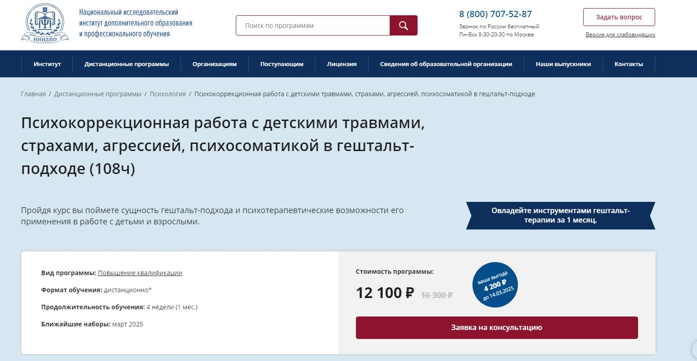⭐ Рейтинг: 4.7
- Сайт: niidpo.ru/seminar/psihokorrekcionnaya-rabota-s-detmi-v-geshtalt-podhode-108-chasa
- Полная стоимость: 16 300 рублей (со скидкой 25% – 12 100 рублей).
- Рассрочка: нет.
- Длительность: 4 недели (108 часов).
- Документ: Удостоверение о повышении квалификации с государственной лицензией.
- Трудоустройство: Нет официального трудоустройства, но предоставляется сертификат компетенций.
Особенности курса:
Программа предназначена для специалистов, работающих с детскими страхами, агрессией и психосоматикой в гештальт-подходе. Курс включает доступ к библиотеке вебинаров, лекциям и методическим материалам. В процессе обучения студенты осваивают методы психокоррекции, изучают феномен привязанности и техники работы с детскими травмами. По окончании курса доступ к материалам сохраняется навсегда.
Преподаватели курса:
-
Коломейцева Лидия Владимировна — педагог-психолог, клинический психолог, консультирующий родителей и детей.
Кратко о программе курса:
- Основы гештальт-подхода.
- Работа с детскими психосоматическими проявлениями.
- Терапия контактом, цикл контакта и его механизмы.
- Методы работы с детскими страхами, тревожностью и агрессией.
- Феномен привязанности, этапы и стратегии терапии.
- Психосоматические симптомы в гештальт-терапии.
- Практическая работа с реальными кейсами.
Чему научитесь:
Вы освоите методы работы с детскими страхами и агрессией, научитесь проводить психокоррекцию в гештальт-подходе и корректировать психосоматические нарушения.
Преимущества и особенности:
- Дистанционный формат без необходимости посещения учебного центра.
- Бессрочный доступ к лекциям и материалам после завершения курса.
- Сертификат компетенций, учитываемый при аттестации.
- Доступ к более чем 10 000 записей вебинаров по психологии.
- Бонусные вебинары с экспертами каждый месяц.
- Книжный и киноклуб для психологов.
- Практические задания с проверкой преподавателями.
- Открытая супервизия после окончания курса.
Читайте отзывы учеников:
Студенты отмечают удобный формат дистанционного обучения, профессионализм преподавателей и доступность учебных материалов. Среди плюсов часто упоминают структурированность курса, большое количество практики и возможность применять знания сразу после обучения.
Гештальт-терапия в работе с детской психосоматикой – Институт прикладной психологии
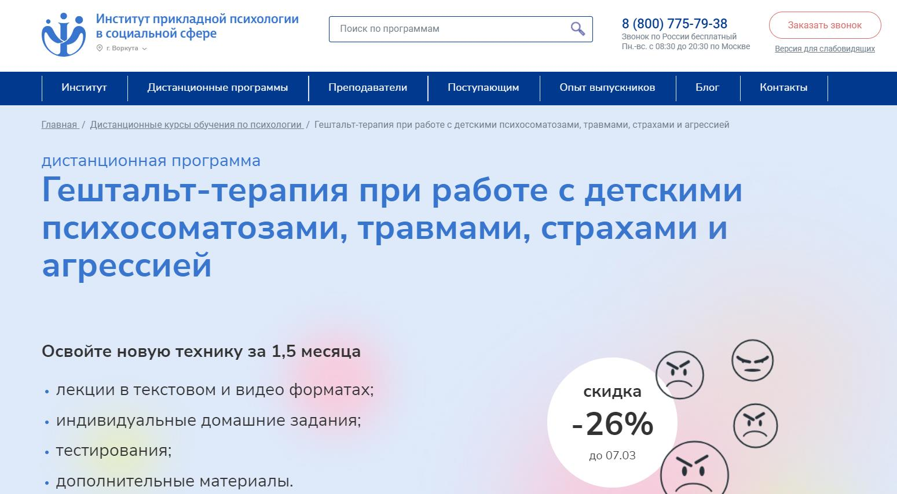⭐ Рейтинг: 4.7
- Сайт: ippss.ru/program/geshtalt-terapiya
- Полная стоимость: 12 150 рублей (со скидкой 9 000 рублей). Возможность вернуть 13 % налогового вычета.
- Рассрочка: нет информации о рассрочке.
- Длительность: 1,5 месяца.
- Документ: Удостоверение о повышении квалификации от московского института.
- Трудоустройство: Вакансии по всей России, поддержка в организации частной практики.
Особенности курса:
Курс позволяет освоить техники гештальт-консультирования, применяемые для работы с детьми, у которых проявляются психосоматические явления. Занятия сопровождаются дополнительными материалами и обеспечивают доступ к обширной базе вебинаров. Особенность программы состоит в глубоком понимании структур семейной системы и теории привязанности.
Преподаватели курса:
- Коломейцева Лидия Владимировна — опыт работы 6 лет, специалист в клинической психологии.
Кратко о программе курса:
- Работа с семейной системой и терапия привязанности.
- Теория привязанности и виды ее нарушений.
- Использование гештальт-техник в работе с детской психосоматикой.
Чему научитесь:
Курс обучит диагностике и работе с детской психосоматикой, помогая находить и решать внутренние детские страхи и травмы.
Преимущества и особенности:
- Дистанционный формат обучения с гибким графиком.
- Бессрочный доступ к учебным материалам после завершения курса.
- Доступ к 1000 вебинаров и профессиональному сообществу.
- Поддержка в трудоустройстве и ведении частной практики.
Читайте отзывы учеников:
Студенты отмечают высокое качество материалов и профессионализм преподавателей. Удобный формат дистанционного обучения и доступ к веб-ресурсам делает процесс обучения комфортным и продуктивным. Многие благодарят школу за возможность углубить знания и навыки.
Курс "Гештальт-терапия" – Международная Школа Профессий
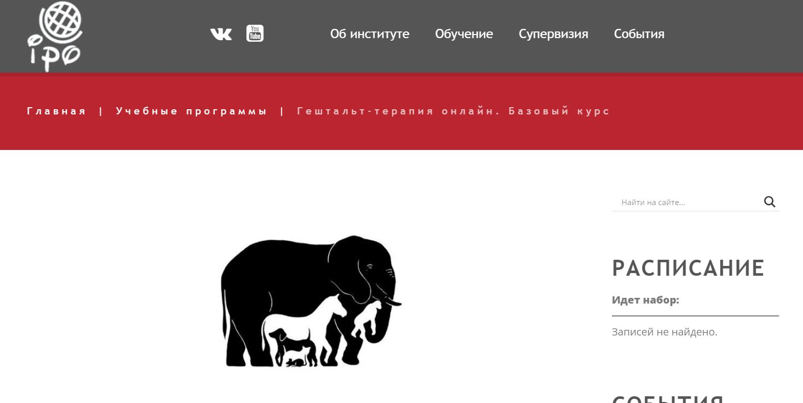
⭐ Рейтинг: 4.7
- Сайт: moscow.videoforme.ru/psychology/gestalt-therapy-courses
- Полная стоимость: 13 300 рублей (скидка 40% до 6 марта). Возможность вернуть 13% налогового вычета. Оплата материнским капиталом, поддержка социальной программы "Социальный контракт".
- Рассрочка: без процентов на 3 месяца, по 4 500 рублей в месяц.
- Длительность: 5 недель.
- Документ: Сертификат о прохождении курса.
- Трудоустройство: Возможность начать частную практику, поддержка на всех этапах обучения и профессионального становления.
Особенности курса:
Программа курса гештальт-терапии в Международной Школе Профессий ориентирована на практическое применение знаний, обеспечивая участников глубокими теоретическими знаниями и навыками, которые можно мгновенно применить в практике. Программа курса длится 5 недель и включает 10 интенсивных практических занятий, что позволяет участникам плавно интегрироваться в профессиональную среду.
Преподаватели курса:
- Более 1000 специалистов-практиков — будут поддерживать и консультировать вас на каждом этапе обучения.
Кратко о программе курса:
- Введение в гештальт-терапию
- Концепция поля в гештальт-терапии
- Теория «self» в гештальте
- Теория контакта в гештальт-терапии
- Срывы цикла контакта или сопротивления
- Основной инструментарий гештальт-терапевта
- Терапевтические отношения в гештальте
- Работа с телом в гештальт-терапии
- Работа с метафорами, образами и сновидениями
- Гештальт-терапия в работе с кризисами и травмой
Чему научитесь:
На курсе вы научитесь строить доверительные отношения с клиентами, работать с телесностью и разрешать кризисы в рамках гештальт-терапии.
Преимущества и особенности:
- Гибкий график обучения с возможностью выбирать расписание занятий.
- Доступ к курсу на 3 месяца, включая интерактивные задания и вебинары.
- Отсутствие дополнительных расходов на транспорт и возможность обучения из любой точки мира.
- Возможность совмещения обучения с работой и другими проектами.
- Поддержка опытных специалистов на протяжении всего курса.
- Интерактивные форматы обучения, включая живое общение с преподавателями и наставниками.
- Благоприятные условия оплаты и возможность возврата налогового вычета.
Читайте отзывы учеников:
Студенты отмечают высокий профессионализм преподавателей Международной Школы Профессий и доступность материала. Обучение проходит в удобном дистанционном формате, что позволяет многим совмещать курс с работой и другими обязательствами. Студенты подчеркивают эффективность курса и возможность применения знаний на практике непосредственно после обучения.
Гештальт-подход в психологическом консультировании – Среда Обучения и Московский институт психоанализа
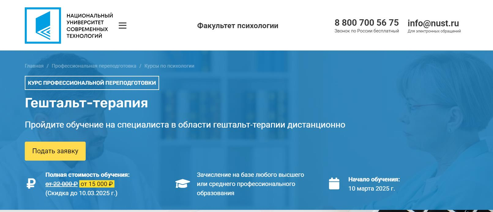⭐ Рейтинг: 4.6
- Сайт: psychology.sredaobuchenia.ru/gestaltcons
- Полная стоимость: 75 000 рублей в месяц. Возможность налогового вычета и оплата материнским капиталом.
- Рассрочка: от 5 243 рублей в месяц (условия уточняйте у специалистов приемной комиссии).
- Длительность: 12 месяцев (556 ак. часов).
- Документ: Два диплома о профессиональной переподготовке от Высшей школы «Среда обучения» и Московского института психоанализа.
- Трудоустройство: Поддержка в личном брендинге и продвижении в соцсетях, юридическая помощь и работа с работодателями.
Особенности курса:
Программа обеспечивает комфортное дистанционное обучение с акцентом на практическую подготовку и изучение гештальт-подхода. Работа в режиме реальных сессий с клиентами позволяет применять приобретенные навыки на практике уже в процессе обучения.
Преподаватели курса:
-
Нина Волонтэй — детский психолог с опытом работы в гештальт-терапии более 12 лет.
-
Александра Бугаёва — специалист по корпоративной психологии и коммуникациям.
-
Екатерина Новикова — профессор Балтийского университета, эксперт в социальной работе.
-
Дмитрий Лифинцев — сертифицированный гештальт-терапевт и коуч.
-
Юлия Чумакова — практикующий бизнес-тренер и гештальт-терапевт.
Кратко о программе курса:
- История и методология гештальт-терапии
- Консультирование в гештальт-подходе
- Направления работы в гештальт-терапии
- Профессиональная этика и компетенции
- Итоговый выпускной модуль
Чему научитесь:
Применять гештальт-подход в консультировании, развивать гибкость в психологической практике, формировать и укреплять навыки работы с клиентами.
Преимущества и особенности:
- 75% практики, включающей онлайн-практикумы и супервизии.
- Дистанционный формат обучения, предусматривающий доступ к материалам курса в любое время.
- Сертификационные сессии с участием профессиональных гештальт-терапевтов.
- Юридическая и карьерная поддержка, включая обучение тонкостям оформления договоров.
- Более 20 000+ открытых вакансий психолога в России.
- Обучение на основе опыта и методов флагманских институтов психоанализа.
- Гибкие условия оплаты и возможность оформления материнским капиталом.
Читайте отзывы учеников:
Студенты Высшей школы «Среда обучения» высоко оценивают курс за его практическую направленность и поддержку преподавателей. Они отмечают, что благодаря полученным знаниям и навыкам нашли новых клиентов и укрепили свои профессиональные позиции. На форумах и отзовиках часто упоминают качественную организацию и удобный формат обучения.
Гештальт-терапия в практике психолога – Национальный центральный институт развития дополнительного образования
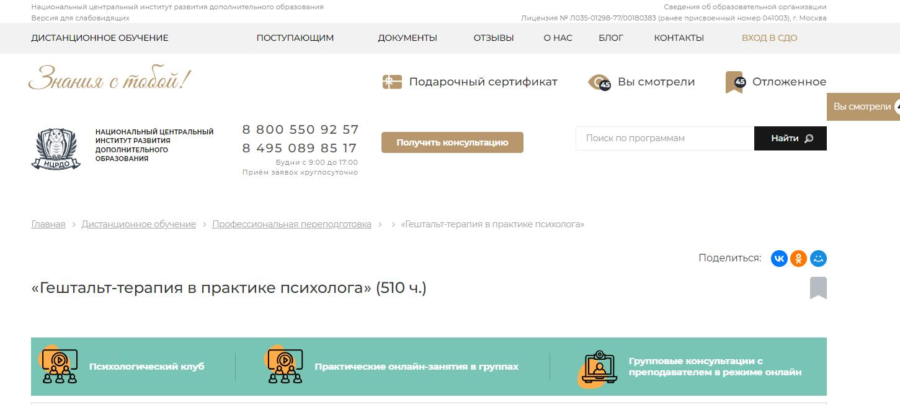⭐ Рейтинг: 4.6
- Сайт: ncrdo.ru/do/pp-geshtalt-terapiya/
- Полная стоимость: 103 400 рублей. Возможность вернуть 13% налогового вычета.
- Рассрочка: 44 300 рублей с ежемесячной оплатой 3 692 рублей на 12 месяцев.
- Длительность: 4 месяца.
- Документ: Диплом о профессиональной переподготовке.
- Трудоустройство: Помощь в трудоустройстве и развитие личной практики. Также предоставляются бесплатные HR-консультации.
Особенности курса:
Курс обеспечивает глубокое понимание гештальт-подхода в психологии. Участники получат доступ к уникальным дистанционным образовательным материалам, включая лекции, вебинары и методические пособия. Практические занятия и тесты можно выполнять в удобное время. Также курс помогает в развитии навыков саморегуляции и осознанности, что полезно как в профессиональной, так и в личной жизни.
Преподаватели курса:
-
Марина Галустова — эксперт в области обучения и развития персонала, с многолетним опытом управления коммуникациями и эмоционального интеллекта.
Кратко о программе курса:
- Изучение общей психологии и психологии личности
- Изучение основ психотерапии и психодиагностики
- Рассмотрение гештальт-подхода и теории self
- Практические занятия по гештальт-терапии в семейном консультировании
- Работа с детьми и техниками сновидений в гештальте
Чему научитесь:
Вы сможете применять техники гештальт-терапии для коррекции невротических состояний и развития осознанности.
Преимущества и особенности:
- Дистанционное обучение
- Доступ к обширной библиотеке вебинаров
- Практические задания и тесты
- Бесплатные HR-консультации
- Гибкий учебный график
Читайте отзывы учеников:
Большинство студентов высоко оценивают курс за его практическую направленность и удобный формат обучения. Они отмечают пользу от полученных навыков в профессиональной практике и возможность интеграции знаний в повседневную жизнь.
Обучение гештальт-терапии – Учебный центр «СЕНТИО»
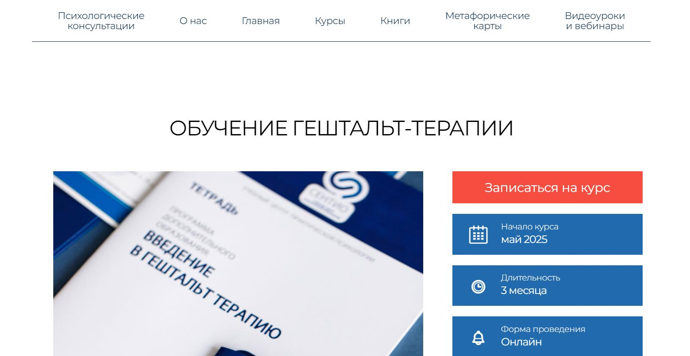⭐ Рейтинг: 4.6
- Сайт: sentio-online.ru/course/geshtalt-therapy
- Полная стоимость: 24 000 рублей (возможность вернуть 13 % налогового вычета)
- Рассрочка: 0% на 3 месяца, от 8 000 рублей в месяц
- Длительность: 3 месяца
- Документ: Удостоверение о прохождении обучения и Сертификат об обучении
- Трудоустройство: Поддержка выпускников в профессиональном развитии и возможность присоединиться к сети специалистов
Особенности курса:
Курс обеспечивает полноценное погружение в основы гештальт-терапии, охватывая как теоретические, так и практические аспекты. Студенты изучают основные понятия, теорию поля, концепции Self и сопротивления, разбирают методы работы с метафорами, рисунками и работой с метафорическими картами. Возможно участие в практических «тройках» для закрепления материала.
Преподаватели курса:
-
Арустамян Карине Сергоевна — гештальт-консультант с многолетним опытом, интегративный терапевт и преподаватель, ведущий программы.
Кратко о программе курса:
- Основы гештальт-терапии
- Теория поля и Self в терапии
- Сопротивление и прерывание контакта
- Творческие методы: работа с рисунками и арт-терапия
- Метафорические карты и работа с сновидениями
- Концепция полярностей
Чему научитесь:
Обучение позволит интегрировать техники гештальт-терапии в практику, решать личностные и семейные проблемы, достигать эмоциональной целостности.
Преимущества и особенности:
- Удобный онлайн-формат обучения
- Практическая отработка навыков в мини-группах
- Обратная связь от преподавателя и разбор выполненных заданий
- Доступ к материалам и записям курса на 2 месяца после окончания
- Получение сертификата и удостоверения после успешного завершения
Читайте отзывы учеников:
Многие учащиеся Учебного центра «СЕНТИО» подчеркивают, что курс дает ценные знания и навыки, которые применимы в реальной практике. Отмечается высокий профессионализм преподавателей и прикладной формат обучения. На платформах, таких как Яндекс и IRecommend, пользователи хвалят структурированность курса и возможность обучения в удобное время.
Гештальт-терапия онлайн. Базовый курс – Институт Психотерапии Онлайн
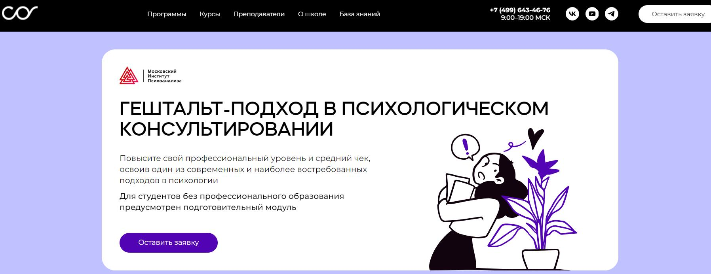⭐ Рейтинг: 4.6
- Сайт: institut.online/geshtalt-terapiya-onlayn-bazovyy-kurs/
- Полная стоимость: от 12 000 рублей. Возможность вернуть 13% налогового вычета. Предоставление гранта на обучение на 100 000 рублей.
- Рассрочка: 0% на 12 месяцев, от 1 000 рублей в месяц без первого взноса.
- Длительность: 7,5 месяцев (примерно 30 недель), занятия проходят еженедельно.
- Документ: Сертификат о прохождении курса с государственной лицензией.
- Трудоустройство: Поддержка в построении карьеры и развитии частной практики.
Особенности курса:
Курс ориентирован на изучение теории гештальт-терапии, исследование себя, обучение самоподдержке и поддержке других, развитие базовых навыков гештальт-терапевта. Теоретический материал сопровождается практическими упражнениями, позволяющими осознать материал через собственный опыт. В программу включены упражнения, мини-сессии в парах и возможность получить индивидуальную психотерапевтическую сессию с ведущим группы.
Кратко о программе курса:
- История гештальт-терапии. Основы подхода.
- Феноменология в гештальт-терапии.
- Диалог в гештальт-терапии.
- Теория поля в гештальт-терапии.
- Фигура и фон. Граница и контакт.
- Цикл контакта и прерывания. Открытые и закрытые гештальты.
- Прерывания контакта: конфлюэнция.
- Прерывания контакта: интроекция.
- Прерывания контакта: проекция.
- Прерывания контакта: ретрофлексия.
Чему научитесь:
Вы освоите теорию и методы гештальт-терапии, приобретете навыки самоподдержки и поддержки других, а также получите опыт работы в формате онлайн-терапии.
Преимущества и особенности:
- Дистанционное обучение в формате видеоконференций.
- Сочетание теоретических видео-уроков и практических занятий.
- Возможность участия в мини-сессиях и индивидуальных терапевтических сессиях.
- Поддержка преподавателей и кураторов на всех этапах обучения.
- Развитие практических навыков гештальт-терапевта с учетом особенностей онлайн-работы.
- Гибкий график обучения с еженедельными занятиями.
- Предоставление сертификата о прохождении курса с государственной лицензией.
- Поддержка в построении карьеры и развитии частной практики.
Читайте отзывы учеников:
Отзывы студентов Института Психотерапии Онлайн преимущественно положительные. Студенты отмечают качественное содержание курса, профессионализм преподавателей, удобный формат обучения и эффективную поддержку на всех этапах обучения. Многие благодарят за возможность получить востребованную профессию и отмечают, что обучение помогло им начать успешную карьеру в психологии.
Гештальт-терапия – Национальный университет современных технологий
⭐ Рейтинг: 4.5
- Сайт: xn--m1aidc.xn--p1ai/professionalnaya-perepodgotovka/kursy-po-psixologii/geshtalt-terapiya
- Полная стоимость: от 22 000 ₽, от 15 000 ₽ при оплате до 10.03.2025. Возможность получить налоговый вычет 13%.
- Рассрочка: Предоплата 50%, оставшаяся сумма в конце обучения.
- Длительность: 3 месяца/6 месяцев с возможностью ускоренного курса.
- Документ: Диплом о профессиональной переподготовке и сертификат соответствия.
- Трудоустройство: Выпускники бесплатно становятся членами Международной ассоциации психологов, что повышает их конкурентоспособность на рынке труда.
Особенности курса:
Курс позволяет приобрести знания и навыки в области гештальт-терапии по международным стандартам. Обучение проводится дистанционно в удобное время, используя качественные видеолекции и вебинары. Программа предоставляет возможность взаимодействия с преподавателями на регулярной основе, а также получение поддержки через персонального координатора. Выпускники получают диплом, который подтвержден в Федеральном реестре и позволяет работать в любой точке мира.
Преподаватели курса:
-
Панасюк Александр Юрьевич — доктор психологических наук, профессор.
-
Афанасьева Татьяна Владиславовна — медицинский психолог.
-
Малюченко Геннадий Николаевич — кандидат психологических наук.
-
Кузнецова Екатерина Александровна — кандидат социологических наук.
-
Ефремова Александра Алексеевна — нейропсихолог.
Кратко о программе курса:
- Дистанционное обучение с доступом к системе через личный кабинет
- Еженедельные вебинары и консультации
- Выполнение итоговой работы по выбранной теме
- Получение диплома и сертификата соответствия
Чему научитесь:
Вы освоите методы гештальт-терапии, научитесь проводить индивидуальные и групповые консультации и сможете работать как в государственных, так и в частных учреждениях.
Преимущества и особенности:
- Дистанционный формат обучения
- Опытные преподаватели с научными степенями
- Гибкость в выборе темпа обучения
- Сертификация для выпускников
- Членство в международной ассоциации
- Вебинары и видеолекции в высоком качестве >
- Персональный куратор на период обучения
Читайте отзывы учеников:
Выпускники часто подчеркивают удобный формат дистанционного обучения и качество видео-материалов. Преподаватели всегда готовы помочь и ответить на вопросы. Также студенты отмечают возможность вступления в международные ассоциации, что дает преимущество при трудоустройстве. Пользователи форумов и сайтов отзывов, таких как Отзовик и Яндекс, хвалят курс за глубокую проработку программы и профессионализм преподавателей.
Психологическое консультирование по методу гештальт-терапии – Институт практической психологии и педагогики
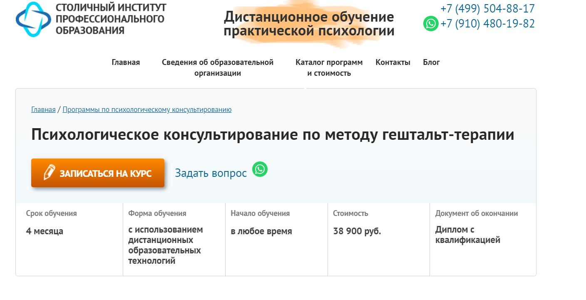⭐ Рейтинг: 4.5
- Сайт: ippt.ru/katalog_programm/psihologicheskoe_konsultirovanie_po_metodu_geshtaltterapii/
- Полная стоимость: 38 900 рублей. Возможность вернуть 13 % налогового вычета. Оплата обучения возможна с помощью материнского капитала.
- Рассрочка: Без процентов, оплата помесячная.
- Длительность: 4 месяца.
- Документ: Диплом о профессиональной переподготовке с государственной лицензией.
- Трудоустройство: Помощь в старте частной практики и монетизации знаний.
Особенности курса:
Курс предлагает глубокое изучение гештальт-терапии, обеспечивая полное освоение как теоретических аспектов, так и практического применения знаний. Программа включает личностную работу и поддержку студентов, что способствует их профессиональному и личностному развитию. Платформа дистанционного обучения позволяет находить время для занятий в удобное время, минимизируя стрессы и позволяя студентам совмещать учебу с работой.
Кратко о программе курса:
- Психологическое консультирование
- Общая психология и психология личности
- Психология развития, конфликта и общения
- Семейное консультирование
- Проективные методы исследования личности
- Основы и техники гештальт-терапии
Чему научитесь:
Освоите методы гештальт-консультирования, научитесь применять техники терапии для решения личных и профессиональных задач.
Преимущества и особенности:
- Дистанционное обучение с доступом в личный кабинет
- Экспертная поддержка кураторов
- Возможность практической работы с клиентами
- Помощь в монетизации навыков и старте частной практики
- Акцент на личностное развитие и личную терапию
- Доступ к архиву лекций и учебных материалов
- Гибкий график обучения
Читайте отзывы учеников:
Отзывы студентов данного курса многочисленно положительные. Ученики высоко оценивают качество обучения, гибкий подход к организации процесса и полезность полученных знаний. На различных платформах отмечают эффективное применение теории на практике, персонализированный подход к обучению и возможность совмещения учебы с работой. Высказываются слова благодарности за чуткость преподавателей и поддержку на всех этапах образовательного процесса.
Гештальт-терапия - ArtForIntrovert
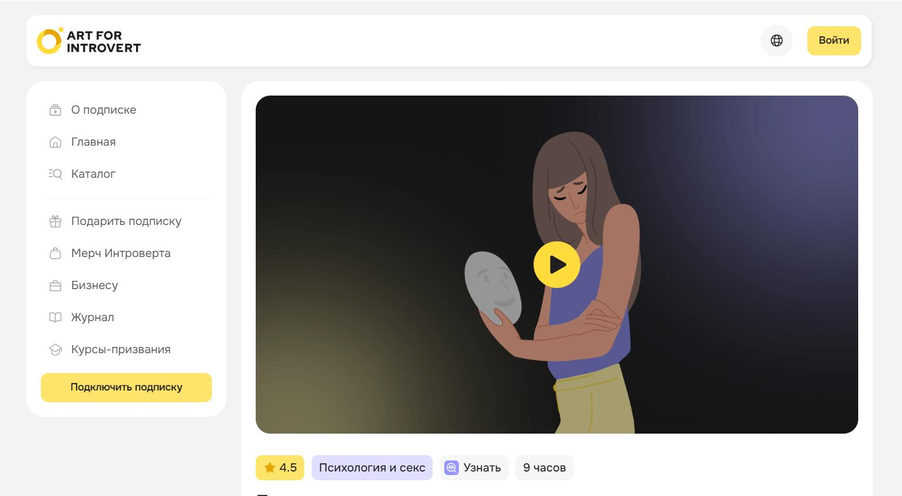⭐ Рейтинг: 4.5
- Сайт: new.artforintrovert.ru/course/geshtalt-terapiya
- Полная стоимость: Не указана. Возможности налогового вычета и гранта не предусмотрены.
- Рассрочка: Информация отсутствует.
- Длительность: 9 часов
- Документ: Информация отсутствует.
- Трудоустройство: Не указано, существуют ли дополнительные бонусы или помощь в трудоустройстве.
Особенности курса:
Курс предлагает погружение в методы гештальт-терапии, охватывая теоретические аспекты и практические навыки, которые можно применить в различных областях психотерапии. Включены темы, способствующие пониманию холистического подхода и различных техник гештальт-терапевтов. Материалы курса позволяют развить навыки саморазвития через осознанность и личностный рост.
Кратко о программе курса:
- Введение в гештальт-терапию: исторические основы
- Холистический подход и теория поля Курта Левина
- Принципы, постулаты и способы гештальт-терапии
- Методы взаимодействия с клиентами и способы разрешения конфликтов
Чему научитесь:
Освоите ключевые методы гештальт-терапии, узнаете, как применять эти знания для помощи себе и другим, улучшите навыки взаимодействия с клиентами.
Преимущества и особенности:
- Комплексный подход к обучению: сочетание теории и практики
- Формат обучения удобен для различных учеников, включая интровертов
- Доступ к разнообразным методикам гештальт-анализа
- Помощь в развитии эмоционального интеллекта
- Современные методики преподавания и поддержка профессионалов
Читайте отзывы учеников:
По отзывам студентов ArtForIntrovert, курс высоко ценится за структурированность, информативность и актуальность информации. Студенты отмечают профессионализм ведущих специалистов и удобный формат дистанционного обучения.
Обучающий курс по гештальтпсихологии – Онлайн Академия
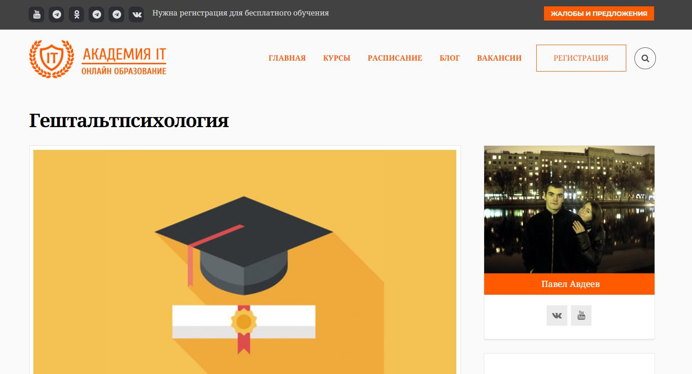⭐ Рейтинг: 4.5
- Сайт: academiait.ru/course/geshtaltpsihologiya/
- Полная стоимость: Бесплатно. Возможность найти грант или стажировку.
- Рассрочка: Не требуется, курс бесплатный.
- Длительность: 9 уроков
- Документ: Сертификат не предоставляется.
- Трудоустройство: Возможность участия в практиках и стажировках.
Особенности курса:
Бесплатный курс, доступный без предварительной подготовки. Позволяет изучить основы гештальтпсихологии и определиться с направлением интересов в психологии. Курс также предлагает доступ к множеству других бесплатных образовательных программ.
Кратко о программе курса:
- Введение в гештальтпсихологию
- Подход Вертгеймера
- Эксперименты Кёлера
- Образование гештальтов
- Теория поля К. Левина
- Возрастная психология
- Исследования детских рисунков Ганса Фолькельта
Чему научитесь:
Получите базовые знания в гештальтпсихологии, способствующие определению будущих образовательных и карьерных интересов.
Преимущества и особенности:
- Полностью бесплатный курс
- Доступность без предварительной подготовки
- Широкая программа обучения
- Возможность участия в практике и стажировках
- Поддержка сообщества студентов
Читайте отзывы учеников:
Студенты отмечают удобный формат обучения и возможность определиться с профессиональным направлением. Оказывают высокую оценку лояльности института к ученикам и доступу к дополнительным материалам и курсам.